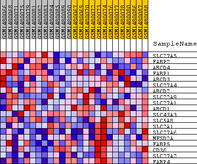
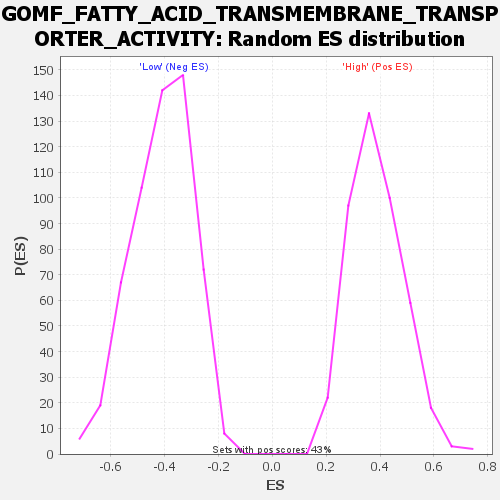

Profile of the Running ES Score & Positions of GeneSet Members on the Rank Ordered List
| Dataset | WG6v3.CPT1A.cls#High_versus_Low.CPT1A.cls#High_versus_Low_repos |
| Phenotype | CPT1A.cls#High_versus_Low_repos |
| Upregulated in class | Low |
| GeneSet | GOMF_FATTY_ACID_TRANSMEMBRANE_TRANSPORTER_ACTIVITY |
| Enrichment Score (ES) | -0.799161 |
| Normalized Enrichment Score (NES) | -1.9517289 |
| Nominal p-value | 0.0 |
| FDR q-value | 0.01260411 |
| FWER p-Value | 0.124 |
| SYMBOL | TITLE | RANK IN GENE LIST | RANK METRIC SCORE | RUNNING ES | CORE ENRICHMENT | |
|---|---|---|---|---|---|---|
| 1 | SLC27A5 | SLC27A5 | 4431 | 0.023 | -0.2111 | No |
| 2 | FABP2 | FABP2 | 4980 | 0.019 | -0.2250 | No |
| 3 | ABCD4 | ABCD4 | 6253 | 0.013 | -0.2812 | No |
| 4 | FABP1 | FABP1 | 8171 | 0.006 | -0.3759 | No |
| 5 | ABCD3 | ABCD3 | 9813 | 0.001 | -0.4601 | No |
| 6 | SLC27A4 | SLC27A4 | 11031 | -0.003 | -0.5205 | No |
| 7 | ABCD2 | ABCD2 | 11672 | -0.005 | -0.5495 | No |
| 8 | SLC22A9 | SLC22A9 | 11839 | -0.006 | -0.5538 | No |
| 9 | SLC27A1 | SLC27A1 | 13614 | -0.013 | -0.6356 | No |
| 10 | ABCD1 | ABCD1 | 14731 | -0.020 | -0.6783 | No |
| 11 | SLC43A3 | SLC43A3 | 15744 | -0.029 | -0.7091 | No |
| 12 | SLC5A8 | SLC5A8 | 16898 | -0.044 | -0.7363 | No |
| 13 | SLC2A1 | SLC2A1 | 18119 | -0.075 | -0.7433 | Yes |
| 14 | SLC27A6 | SLC27A6 | 18660 | -0.104 | -0.6939 | Yes |
| 15 | MFSD2A | MFSD2A | 18867 | -0.122 | -0.6140 | Yes |
| 16 | FABP5 | FABP5 | 19077 | -0.153 | -0.5118 | Yes |
| 17 | CD36 | CD36 | 19196 | -0.179 | -0.3853 | Yes |
| 18 | SLC27A2 | SLC27A2 | 19287 | -0.206 | -0.2376 | Yes |
| 19 | FABP4 | FABP4 | 19414 | -0.330 | 0.0004 | Yes |

